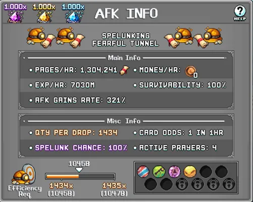
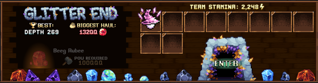
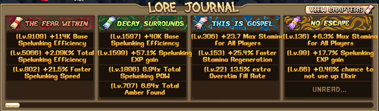
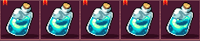
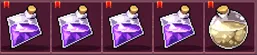
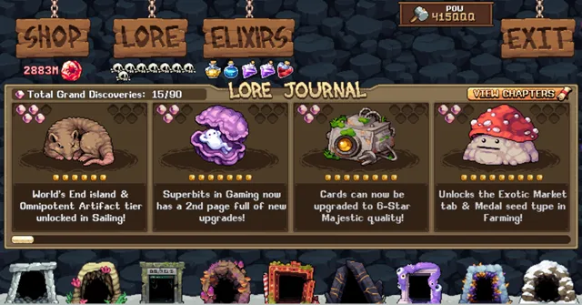
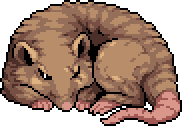
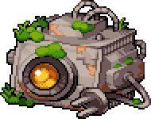
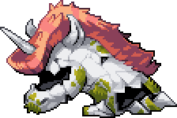
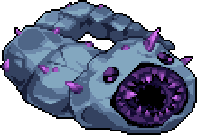

이 Spelunking 가이드는 스펠렁킹 효율을 높이고, 위대한 발견(Grand Discovery)을 찾고, 최고 깊이를 경신하고, 호박(앰버) 획득을 늘리며, 모든 이야기 보스(Lore Boss)를 처치해 고유한 보너스를 얻는 데 도움을 줍니다. 이 페이지에는 최적의 초기 스펠렁킹 효율 출처, 위대한 발견 세팅, 최적 엘릭서, 각 보스에 필요한 POW 수치, 그리고 이 World 7 스킬의 진행을 최대화하기 위한 전략적 팁이 포함되어 있습니다.

Spelunking 효율 높이기
World 7에 처음 도달했을 때 Spelunking 효율이 낮은 것은 흔한 일로, 레벨 올리기가 어렵습니다. 아래는 Equinox Broadbass 맵(Refraction Bend)에서 AFK로 스펠렁킹 페이지를 대량 획득하기 위한 최적의 초기 효율 출처입니다. 이 스크롤들은 스펠렁킹 효율과 속도를 크게 높여줍니다.
| 출처 | 비고 |
|---|---|
| Spelunking Pages – Chapter One 'The Fear Within' | Equinox Broadbass 맵에서 Active(직접 플레이) 또는 AFK(방치)로 파밍하는 스펠렁킹 페이지는 이 스킬의 장기 진행에 핵심입니다. 획득한 스크롤을 매일 모두 읽으세요. 처음에는 5가지 다른 더미로 분할하고, 계정 전체 스펠렁킹 레벨 합산이 500에 도달하면 8가지로 늘리세요(리프트 레벨 16이 일일 최대 읽기 수를 높입니다). |
| Multitool Stamp – All Skill Efficiency | 모든 스킬에 중요한 계정 부스트를 제공하는 강력한 스탬프입니다. Lampar Lake 맵의 World 5 Poigu에서 획득합니다. |
| Skilled Dimwit Prayer | 모든 스킬에 유용하며 최대 레벨까지 올려야 하는 강력한 기도입니다. Goblin Gorefest 25웨이브 클리어로 잠금 해제됩니다. |
| Spapunkie – Green Alchemy Bubble | 이 연금술 버블을 잠금 해제하고 업그레이드하세요. World 7 두 번째 맵의 Doodlefish 드롭이 필요합니다. |
| Equinox Broadbass & Chaotic Troll Cards | 이 두 카드는 스펠렁킹 효율을 높여주며 World 4 연구소 카드 두 배 효과와 함께 두 배로 적용됩니다. Equinox Broadbass 카드는 계정 스펠렁킹 레벨 합산 300에 도달하면 리프트 레벨 16에 의해 패시브가 됩니다. |

Spelunking 전략 — 앰버, 깊이, 위대한 발견 & 보스
Spelunking은 POW 레벨과 앰버 획득을 늘려 이야기 보스를 처치하는 데 필요한 POW에 도달하는 반복 활동 루프에 집중합니다. 이 이야기 보스들이 계정의 주요 부스트를 제공하며, 소수의 앰버 상점 업그레이드(Kattlekruk 버블, 조각상 드롭, 마스터클래스 드롭, 드롭률, 시간 건너뛰기 아이템)도 있습니다. 아래는 서로 다른 엘릭서 세팅과 전략이 필요한 스펠렁킹 활동들입니다.

앰버 런 (Amber Run)

터널에서 최고 앰버 기록을 세워 즉시 앰버를 얻고, 일일 앰버 생성(Unexplainable Daily Amber Gains 상점 업그레이드)을 높이며 POW(Hauling the POW)를 증가시킵니다.
처음에는 앰버 배수가 적용될 만큼 깊이 들어갈 수 있는 터널을 원하므로, Overstim을 사용해 RustBelt_03, Blushpit, Chucklemire를 번갈아 이용하세요. Glitter End 이야기 보스를 처치하면 이곳이 큰 차이로 최고의 앰버 터널이 되며, 결국에는 e30+ POW에서 Scoutpost가 최고가 됩니다.

- 앰버 배수를 높이는 Jobs All Done 상점 업그레이드를 위해 각 깊이의 모든 오브젝트를 파괴하세요.
- Deep Pockets 상점 업그레이드를 위해 가능한 한 깊이 들어가세요.
- Rope Subsidy 상점 업그레이드 배수를 위해 너무 위험할 때는 로프로 탈출하세요.

깊이 런 (Depth Run)

터널에서 최대 깊이 신기록을 달성해 POW(Depthing the POW 상점 업그레이드)와 앰버 획득(Amber from the Depths 상점 업그레이드)을 높입니다.


새로운 POW 레벨에 도달하면 이전 터널로 돌아가 깊이 기록을 경신하는 것도 잊지 마세요.

- 스태미나를 아끼고 깊이에만 집중하기 위해 오브젝트를 최대한 적게 파괴하세요.
- 목표가 최대 깊이이므로 로프로 탈출하는 것은 신경 쓰지 않아도 됩니다.
발견/위대한 발견 런 (Discovery/Grand Discovery Run)
새로운 발견이나 위대한 발견을 잠금 해제해 POW(Discovering the POW 상점 업그레이드)와 앰버 획득(Amber from 'Em All 상점 업그레이드)을 높입니다.
일반 발견은 이야기 보스 페이지의 노란 원이고, 위대한 발견은 분홍색 보석 모양입니다. 대부분의 위대한 발견은 마지막 오브젝트의 저항이 생기기 전에 많이 파괴할 수 있는 초기 터널에 있습니다.
위대한 발견은 희귀하므로 스펠렁킹 상점 업그레이드, Zenith Statues, Sushi Station (Tier 22), Chapter Five 이야기 스크롤, Minehead Purrhead로 확률을 높이세요.
- 일반 발견을 위해서는 각 오브젝트를 한 번씩 파괴해 잠금 해제하세요.
- 위대한 발견을 위해서는 스태미나를 아끼며 깊이를 공략하세요. 깊은 곳의 오브젝트 대부분이 마지막 오브젝트 유형이 되면 위대한 발견 엘릭서를 사용하고 마지막 오브젝트를 최대한 많이 파괴하세요.
- 새로운 위대한 발견이 잠금 해제되면 화면에 팝업이 표시됩니다.
아이템 런 (Item Run)
터널 런에서 Exalted Stamp Fragments, Prisma Bubbles, Snail Mail, Blinding Lanterns, Sigil Syrup을 파밍합니다.
이 아이템 드롭은 앰버 상점 업그레이드로 잠금 해제되며, 추가 업그레이드로 드롭 확률이 높아집니다.
- 스태미나 당 오브젝트 파괴를 최대화하는 데 집중하는 캐릭터 1명을 보내세요.
- 터널 출구 통행료를 피하기 위해 탈출 로프를 사용하세요.
보스 런 (Boss Run)
추천 보스 POW 레벨에 도달했으며, 이것이 유일한 목표입니다.
- 보스 깊이까지 도달하면서 스태미나를 보스를 위해 아껴두세요.
일반 Spelunking 팁
- 매일 스크롤 읽기: 세계 지도의 스펠렁킹 터널에 캐릭터를 배치해 읽을 수 있는 스크롤을 파밍하고, 매일 획득한 스크롤을 더미로 나눠 모두 읽으세요(처음에는 하루 5번, 스펠렁킹 합산 레벨 500과 리프트 레벨 16 이후에는 8번). Equinox Broadbass 맵에서 처음 마주치는 터널은 시간당 스크롤 수를 늘리는 스펠렁킹 효율을 크게 높이는 가장 강력한 스크롤 중 하나이므로 매일 읽는 것만으로도 가치가 있습니다. 진행하면서 Chapter Two 'Decay'(셸슬러그 맵)와 Chapter Six 'Kelp'(켈프피시 맵)도 읽으세요. 두 가지 모두 POW와 앰버 배수가 있습니다. 모든 스펠렁킹 페이지는 위키에 기재되어 있으며, 특정 이야기 저널 버프를 받기 위해 한 더미에서 읽어야 하는 최소 임계값도 확인할 수 있습니다.
- Spelunking 업그레이드: 대부분의 앰버 상점 업그레이드가 스펠렁킹 진행 목표에 유용하므로, 상점에서 POW 수치와 앰버 수치(상점에 표시됨)에 미치는 영향을 확인하면서 같은 비용 단위로 레벨을 올리세요. 1열에 가장 강한 POW 업그레이드가, 3열에 가장 좋은 앰버 업그레이드가 있지만, 도중에 최대로 올릴 수 있는 유틸리티 업그레이드도 많습니다.
최적 엘릭서 (Best Elixirs)
최적의 스펠렁킹 엘릭서는 런 유형, 최대 엘릭서 수, 현재 잠금 해제된 엘릭서에 따라 달라집니다. 모든 엘릭서 관련 업그레이드는 우선순위이며, 숨겨진 엘릭서 상점 업그레이드 이후에는 런 중에 추가 엘릭서를 발견할 수 있습니다.
| 런 유형 / 최적 엘릭서 | 비고 |
|---|---|
| 앰버 런 (Amber Run) | 앰버 배수를 최대화합니다. 빠른 클리어를 위해 첫 번째 세팅에 보라색 그림자 엘릭서 1개를 추가할 수 있습니다. Glitter End와 Scoutpost에는 두 번째 엘릭서 세팅을 사용하세요. 높은 스태미나 덕분에 캐릭터 스태미나가 2~3개 남았을 때 오렌지색 앰버 포션이 큰 효과를 발휘합니다. 이 터널들이 새로 잠금 해제된 경우 낮은 POW 레벨에서 첫 앰버 런 중 깊이 공략을 돕기 위해 빨간색 POW 엘릭서를 추가하세요. |
| 깊이 런 (Depth Run) | 스태미나와 파괴력을 최대화합니다. 스태미나는 충분하지만 더 많은 POW가 필요하다면 잠금 해제 후 초록색 POW 엘릭서를 빨간 하트 POW 엘릭서로 교체하거나 함께 사용하세요. |
| 발견/위대한 발견 런 (Discovery/Grand Discovery Run) | 일반 발견에는 깊이 런 세팅을 사용하세요. 마지막 발견에 도달할 수 있도록 캐릭터 레벨에 따라 스태미나 포션을 조정하세요. 후반 터널에서는 위대한 발견 엘릭서로 인한 POW 손실을 상쇄하고 파괴할 수 있는 마지막 발견 수를 극대화하기 위해 빨간 하트 POW 엘릭서를 추가하세요. |
| 아이템 런 (Item Run) | 오브젝트 파괴와 스태미나를 최대화합니다. 스태미나를 반복적으로 회복할 확률을 위해 보라색 대신 파란색 포션 하나를 추가할 수도 있습니다. |
| 보스 런 (Boss Run) | 깊이 런과 동일한 핵심 세팅을 사용합니다. 잠금 해제 시 보라색 그림자 엘릭서를 빨간 하트 POW 엘릭서로 교체하세요. |
보스별 추천 POW
아래는 이야기 보스를 안정적으로 처치하기 위한 추천 보스 POW와 개별 캐릭터 스태미나입니다. 운이 좋다면 더 낮은 수치로도 처치할 수 있습니다. 자유 플레이 기준 대부분의 POW는 상점 1열과 5열의 스펠렁킹 업그레이드에서 옵니다. 다른 출처로는 이야기 챕터 읽기 보너스나 이야기 보너스가 있는 다른 게임 메카닉(Summoning, Farming, Gaming Palette, Meals, Slab)이 있으며 이들이 서서히 쌓입니다.
빨간 하트 POW 엘릭서는 Bizzario 진행 무렵 잠금 해제되며, 아래 수치는 그 터널부터 초록 POW 엘릭서와 함께 사용하는 것을 기준으로 합니다.
| 이야기 보스 (위치) | 추천 POW | 추천 개별 캐릭터 스태미나 |
|---|---|---|
| Scoundrel Pommsie (Pebblecove) | 50 | 15 이상 |
| Esquire Numbo (Sedimeadow) | 15k | 50 이상 |
| Sentinelbot 447 (Rustbelt_03) | 200k | 250 이상 |
| Greg (Blushpit) | 200M | 500 이상 |
| Blind Gallopera (Chucklemire) | 200B | 800 이상 |
| Esquire Skuumbus (Lunarheim) | 80Q | 1,000 이상 |
| Mister Jazzie (Bizarrio) | 20QQ | 1,100 이상 |
| Bah Dazzul (Glitter End) | 13QQQ | 1,800 이상 |
| (Scoutpost) | 1e25 | 2,000 이상 |